2023.03.06阅读思考
- 临键锁=行锁(记录锁)+间隙锁
- 间隙锁用来解决幻读
- Update语句会在非唯一索引的name加上左区间的间隙锁，右区间的间隙锁，如果未定位到则元素则锁全索引
- 可以看到两个事务 update 不存在的记录，先后获得
间隙锁( gap 锁)，gap 锁之间是兼容的所以在update环节不会阻塞。两者都持有 gap 锁，然后去竞争插入意向锁。当存在其他会话持有 gap 锁的时候，当前会话申请不了插入意向锁，导致死锁。 - 插入意向锁是在插入一行记录操作之前设置的一种间隙锁，这个锁释放了一种插入方式的信号，即事务A需要插入意向锁(E,W)
- 意向锁包括两种类型：意向共享锁（Intention Shared Lock，简称IS锁）和意向排他锁（Intention Exclusive Lock，简称IX锁）。这些锁不直接作用在数据记录上，而是作用在表级别或表的区间级别上。意向锁不是用来直接保护数据记录的，而是用来表明事务对表或区间的意向操作。实际的数据记录级别的锁由排他锁或共享锁来实现。
- 插入意向锁是一种特殊的意向锁，用于在B+树索引的插入操作中防止冲突。当一个事务要插入新的记录到索引中时，会请求插入意向锁，表明自己有意向在该索引的某个位置插入记录。
2023.06.06阅读思考
- 意向锁作用于全表或者索引区间，所以可以提高【查询、插入、更新】的并发度，因为意向锁作用于局部，只要并发事务不是操作统一区间，就可以不冲突的执行操作，从而提升执行效率
实际分析Mysql死锁问题
前言
发生死锁了，如何排查和解决呢？本文将跟你一起探讨这个问题
- 准备好数据环境
- 模拟死锁案发
- 分析死锁日志
- 分析死锁结果
环境准备
数据库隔离级别：
mysql> select @@tx_isolation;
+-----------------+
| @@tx_isolation |
+-----------------+
| REPEATABLE-READ |
+-----------------+
1 row in set, 1 warning (0.00 sec)
自动提交关闭：
mysql> set autocommit=0;
Query OK, 0 rows affected (0.00 sec)
mysql> select @@autocommit;
+--------------+
| @@autocommit |
+--------------+
| 0 |
+--------------+
1 row in set (0.00 sec)
表结构:
//id是自增主键，name是非唯一索引，balance普通字段
CREATE TABLE `account` (
`id` int(11) NOT NULL AUTO_INCREMENT,
`name` varchar(255) DEFAULT NULL,
`balance` int(11) DEFAULT NULL,
PRIMARY KEY (`id`),
KEY `idx_name` (`name`) USING BTREE
) ENGINE=InnoDB AUTO_INCREMENT=3 DEFAULT CHARSET=utf8;
表中的数据：
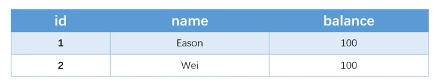
模拟并发
开启两个终端模拟事务并发情况，执行顺序以及实验现象如下：
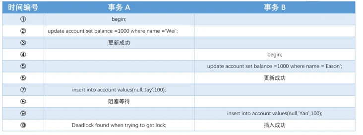
1）事务A执行更新操作，更新成功
mysql> update account set balance =1000 where name ='Wei';
Query OK, 1 row affected (0.01 sec)
2）事务B执行更新操作，更新成功
mysql> update account set balance =1000 where name ='Eason';
Query OK, 1 row affected (0.01 sec)
3）事务A执行插入操作，陷入阻塞~
mysql> insert into account values(null,'Jay',100);
这时候可以用select * from information_schema.innodb_locks;查看锁情况：
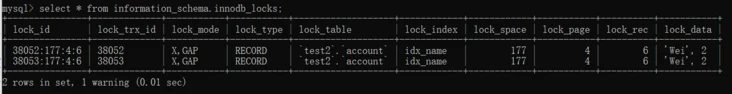
4）事务B执行插入操作，插入成功，同时事务A的插入由阻塞变为死锁error。
mysql> insert into account values(null,'Yan',100);
Query OK, 1 row affected (0.01 sec)
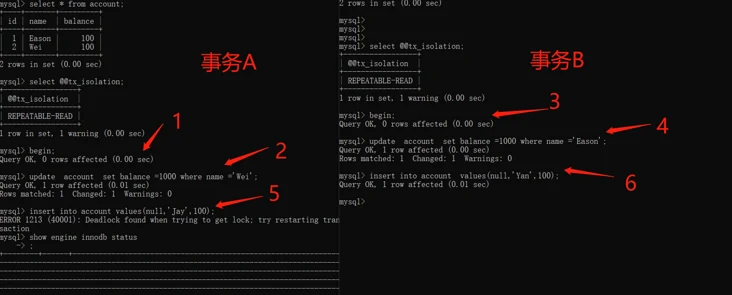
锁介绍
在分析死锁日志前，先做一下锁介绍，哈哈~
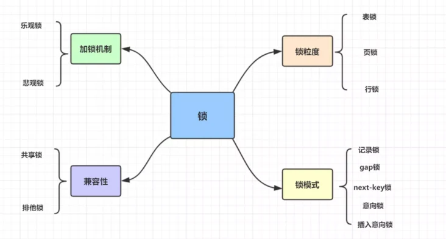
主要介绍一下兼容性以及锁模式类型的锁：
共享锁与排他锁
InnoDB 实现了标准的行级锁，包括两种：共享锁（简称 s 锁）、排它锁（简称 x 锁）。
- 共享锁（S锁）：允许持锁事务读取一行。
- 排他锁（X锁）：允许持锁事务更新或者删除一行。
如果事务 T1 持有行 r 的 s 锁，那么另一个事务 T2 请求 r 的锁时，会做如下处理：
- T2 请求 s 锁立即被允许，结果 T1 T2 都持有 r 行的 s 锁
- T2 请求 x 锁不能被立即允许
如果 T1 持有 r 的 x 锁，那么 T2 请求 r 的 x、s 锁都不能被立即允许，T2 必须等待T1释放 x 锁才可以，因为X锁与任何的锁都不兼容。
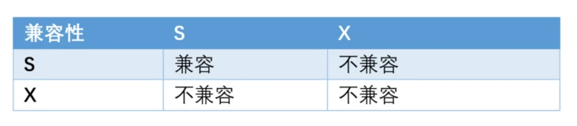
意向锁
- 意向共享锁( IS 锁)：事务想要获得一张表中某几行的共享锁
- 意向排他锁( IX 锁)： 事务想要获得一张表中某几行的排他锁
比如：事务1在表1上加了S锁后，事务2想要更改某行记录，需要添加IX锁，由于不兼容，所以需要等待S锁释放；如果事务1在表1上加了IS锁，事务2添加的IX锁与IS锁兼容，就可以操作，这就实现了更细粒度的加锁。
InnoDB存储引擎中锁的兼容性如下表：
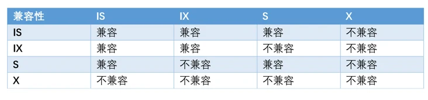
记录锁（Record Locks）
- 记录锁是最简单的行锁，仅仅锁住一行。如：
SELECT c1 FROM t WHERE c1 = 10 FOR UPDATE - 记录锁永远都是加在索引上的，即使一个表没有索引，InnoDB也会隐式的创建一个索引，并使用这个索引实施记录锁。
- 会阻塞其他事务对其插入、更新、删除
记录锁的事务数据（关键词：lock_mode X locks rec but not gap），记录如下：
RECORD LOCKS space id 58 page no 3 n bits 72 index `PRIMARY` of table `test`.`t`
trx id 10078 lock_mode X locks rec but not gap
Record lock, heap no 2 PHYSICAL RECORD: n_fields 3; compact format; info bits 0
0: len 4; hex 8000000a; asc ;;
1: len 6; hex 00000000274f; asc 'O;;
2: len 7; hex b60000019d0110; asc ;;
间隙锁（Gap Locks）
- 间隙锁是一种加在两个索引之间的锁，或者加在第一个索引之前，或最后一个索引之后的间隙。
- 使用间隙锁锁住的是一个区间，而不仅仅是这个区间中的每一条数据。
- 间隙锁只阻止其他事务插入到间隙中，他们不阻止其他事务在同一个间隙上获得间隙锁，所以 gap x lock 和 gap s lock 有相同的作用。
间隙锁的事务数据（关键词：gap before rec），记录如下：
RECORD LOCKS space id 177 page no 4 n bits 80 index idx_name of table `test2`.`account`
trx id 38049 lock_mode X locks gap before rec
Record lock, heap no 6 PHYSICAL RECORD: n_fields 2; compact format; info bits 0
0: len 3; hex 576569; asc Wei;;
1: len 4; hex 80000002; asc ;;
Next-Key Locks
- Next-key锁是记录锁和间隙锁的组合，它指的是加在某条记录以及这条记录前面间隙上的锁。
插入意向锁（Insert Intention）
- 插入意向锁是在插入一行记录操作之前设置的一种间隙锁，这个锁释放了一种插入方式的信号，亦即多个事务在相同的索引间隙插入时如果不是插入间隙中相同的位置就不需要互相等待。
- 假设有索引值4、7，几个不同的事务准备插入5、6，每个锁都在获得插入行的独占锁之前用插入意向锁各自锁住了4、7之间的间隙，但是不阻塞对方因为插入行不冲突。
事务数据类似于下面：
RECORD LOCKS space id 31 page no 3 n bits 72 index `PRIMARY` of table `test`.`child`
trx id 8731 lock_mode X locks gap before rec insert intention waiting
Record lock, heap no 3 PHYSICAL RECORD: n_fields 3; compact format; info bits 0
0: len 4; hex 80000066; asc f;;
1: len 6; hex 000000002215; asc " ;;
2: len 7; hex 9000000172011c; asc r ;;...
锁模式兼容矩阵（横向是已持有锁，纵向是正在请求的锁）：
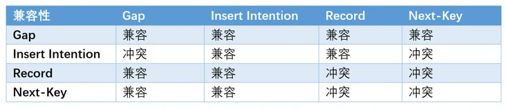
如何读懂死锁日志？
show engine innodb status
可以用show engine innodb status，查看最近一次死锁日志哈~，执行后，死锁日志如下：
2020-04-11 00:35:55 0x243c
*** (1) TRANSACTION:
TRANSACTION 38048, ACTIVE 92 sec inserting
mysql tables in use 1, locked 1
LOCK WAIT 4 lock struct(s), heap size 1136, 4 row lock(s), undo log entries 2
MySQL thread id 53, OS thread handle 2300, query id 2362 localhost ::1 root update
insert into account values(null,'Jay',100)
*** (1) WAITING FOR THIS LOCK TO BE GRANTED:
RECORD LOCKS space id 177 page no 4 n bits 80 index idx_name of table `test2`.`account`
trx id 38048 lock_mode X locks gap before rec insert intention waiting
Record lock, heap no 6 PHYSICAL RECORD: n_fields 2; compact format; info bits 0
0: len 3; hex 576569; asc Wei;;
1: len 4; hex 80000002; asc ;;
*** (2) TRANSACTION:
TRANSACTION 38049, ACTIVE 72 sec inserting, thread declared inside InnoDB 5000
mysql tables in use 1, locked 1
5 lock struct(s), heap size 1136, 4 row lock(s), undo log entries 2
MySQL thread id 52, OS thread handle 9276, query id 2363 localhost ::1 root update
insert into account values(null,'Yan',100)
*** (2) HOLDS THE LOCK(S):
RECORD LOCKS space id 177 page no 4 n bits 80 index idx_name of table `test2`.`account`
trx id 38049 lock_mode X locks gap before rec
Record lock, heap no 6 PHYSICAL RECORD: n_fields 2; compact format; info bits 0
0: len 3; hex 576569; asc Wei;;
1: len 4; hex 80000002; asc ;;
*** (2) WAITING FOR THIS LOCK TO BE GRANTED:
RECORD LOCKS space id 177 page no 4 n bits 80 index idx_name of table `test2`.`account`
trx id 38049 lock_mode X insert intention waiting
Record lock, heap no 1 PHYSICAL RECORD: n_fields 1; compact format; info bits 0
0: len 8; hex 73757072656d756d; asc supremum;;
*** WE ROLL BACK TRANSACTION (1)
我们如何分析以上死锁日志呢？
第一部分
1）找到关键词TRANSACTION，事务38048
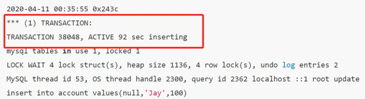
2）查看正在执行的SQL
insert into account values(null,'Jay',100)
3）正在等待锁释放(WAITING FOR THIS LOCK TO BE GRANTED)，插入意向排他锁（lock_mode X locks gap before rec insert intention waiting），普通索引（idx_name），物理记录(PHYSICAL RECORD)，间隙区间（未知，Wei）;
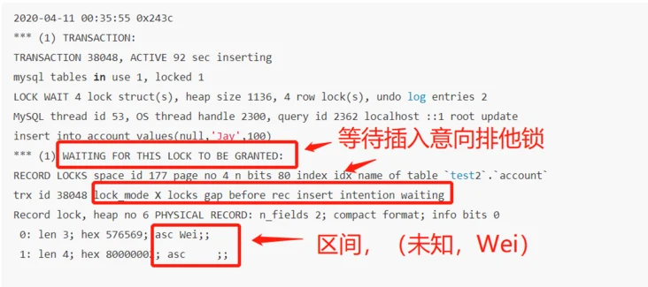
第二部分
1）找到关键词TRANSACTION，事务38049
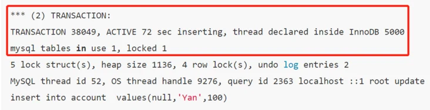
2）查看正在执行的SQL
insert into account values(null,'Yan',100)
3）持有锁(HOLDS THE LOCK)，间隙锁(lock_mode X locks gap before rec)，普通索引(index idx_name)，物理记录(physical record)，区间（未知，Wei）;
4）正在等待锁释放(waiting for this lock to be granted)，插入意向锁(lock_mode X insert intention waiting)，普通索引上(index idx_name)，物理记录(physical record)，间隙区间（未知，+∞）;

5）事务1回滚(we roll back transaction 1)；
查看日志结果
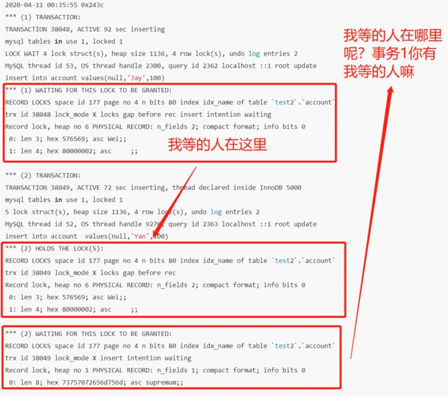
查看日志可得：
- 事务A正在等待的插入意向排他锁（事务A即日志的事务1，根据insert语句来对号入座的哈），正在事务B的怀里~
- 事务B持有间隙锁，正在等待插入意向排它锁
这里面，有些朋友可能有疑惑，
- 事务A持有什么锁呢？日志根本看不出来。它又想拿什么样的插入意向排他锁呢？
- 事务B拿了具体什么的间隙锁呢？它为什么也要拿插入意向锁？
- 死锁的死循环是怎么形成的？目前日志看不出死循环构成呢？
我们接下来一小节详细分析一波，一个一个问题来~
死锁分析
死锁死循环四要素
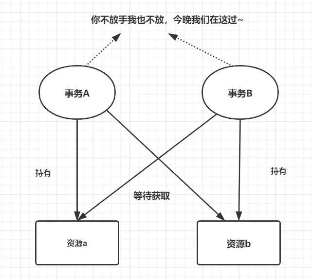
- 互斥条件：指进程对所分配到的资源进行排它性使用，即在一段时间内某资源只由一个进程占用。如果此时还有其它进程请求资源，则请求者只能等待，直至占有资源的进程用毕释放。
- 请求和保持条件：指进程已经保持至少一个资源，但又提出了新的资源请求，而该资源已被其它进程占有，此时请求进程阻塞，但又对自己已获得的其它资源保持不放。
- 不剥夺条件：指进程已获得的资源，在未使用完之前，不能被剥夺，只能在使用完时由自己释放。
- 环路等待条件：指在发生死锁时，必然存在一个进程——资源的环形链，即进程集合{P0，P1，P2，···，Pn}中的P0正在等待一个P1占用的资源；P1正在等待P2占用的资源，……，Pn正在等待已被P0占用的资源。
事务A持有什么锁呢？它又想拿什么样的插入意向排他锁呢？
为了方便记录，例子用W表示Wei，J表示Jay，E表示Eason哈~
我们先来分析事务A中update语句的加锁情况~
update account set balance =1000 where name ='Wei';
间隙锁：
- Update语句会在非唯一索引的name加上左区间的间隙锁，右区间的间隙锁(因为目前表中只有name=’Wei’的一条记录，所以没有中间的间隙锁~)，即（E,W) 和（W，+∞）
- 为什么存在间隙锁？因为这是RR的数据库隔离级别，用来解决幻读问题用的~
记录锁
- 因为name是索引，所以该update语句肯定会加上W的记录锁
Next-Key锁
- Next-Key锁=记录锁+间隙锁，所以该update语句就有了（E，W]的 Next-Key锁
综上所述，事务A执行完update更新语句，会持有锁：
- Next-key Lock：（E，W]
- Gap Lock ：（W，+∞）
我们再来分析一波事务A中insert语句的加锁情况
insert into account values(null,'Jay',100);
间隙锁：
- 因为Jay(J在E和W之间)，所以需要请求加(E,W)的间隙锁
插入意向锁（Insert Intention）
- 插入意向锁是在插入一行记录操作之前设置的一种间隙锁，这个锁释放了一种插入方式的信号，即事务A需要插入意向锁(E,W)
因此，事务A的update语句和insert语句执行完，它是持有了 （E，W]的 Next-Key锁，（W，+∞）的Gap锁，想拿到 (E,W)的插入意向排它锁，等待的锁跟死锁日志是对上的，哈哈~

事务B拥有了什么间隙锁？它为什么也要拿插入意向锁？
同理，我们再来分析一波事务B，update语句的加锁分析：
update account set balance =1000 where name ='Eason';
间隙锁：
- Update语句会在非唯一索引的name加上左区间的间隙锁，右区间的间隙锁(因为目前表中只有name=’Eason’的一条记录，所以没有中间的间隙锁~)，即（-∞，E）和（E，W）
记录锁
- 因为name是索引，所以该update语句肯定会加上E的记录锁
Next-Key锁
- Next-Key锁=记录锁+间隙锁，所以该Update语句就有了（-∞，E]的 Next-Key锁
综上所述，事务B执行完update更新语句，会持有锁：
- Next-key Lock：（-∞，E]
- Gap Lock ：（E，W）
我们再来分析一波B中insert语句的加锁情况
insert into account values(null,'Yan',100);
间隙锁：
- 因为Yan(Y在W之后)，所以需要请求加(W,+∞)的间隙锁
插入意向锁（Insert Intention）
- 插入意向锁是在插入一行记录操作之前设置的一种间隙锁，这个锁释放了一种插入方式的信号，即事务A需要插入意向锁(W,+∞)
所以，事务B的update语句和insert语句执行完，它是持有了 （-∞，E]的 Next-Key锁，（E，W）的Gap锁，想拿到 (W,+∞)的间隙锁，即插入意向排它锁，加锁情况跟死锁日志也是对上的~
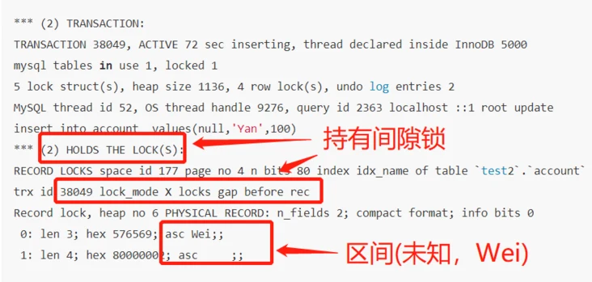
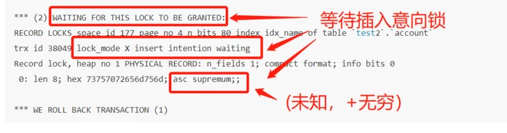
死锁真相还原
接下来呢，让我们一起还原死锁真相吧哈哈
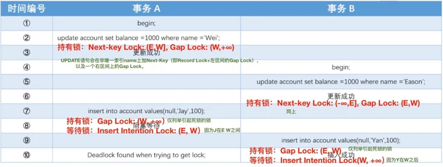
- 事务A执行完Update Wei的语句，持有（E，W]的Next-key Lock，（W，+∞）的Gap Lock ，插入成功~
- 事务B执行完Update Eason语句，持有（-∞，E]的 Next-Key Lock，（E，W）的Gap Lock，插入成功~
- 事务A执行Insert Jay的语句时，因为需要（E，W）的插入意向锁，但是（E，W）在事务B怀里，所以它陷入心塞~
- 事务B执行Insert Yan的语句时，因为需要(W,+∞) 的插入意向锁，但是(W,+∞) 在事务A怀里，所以它也陷入心塞。
- 事务A持有（W，+∞）的Gap Lock，在等待（E，W）的插入意向锁，事务B持有（E，W）的Gap锁，在等待(W,+∞) 的插入意向锁，所以形成了死锁的闭环
（Gap锁与插入意向锁会冲突的，可以看回锁介绍的锁模式兼容矩阵哈） - 事务A,B形成了死锁闭环后，因为Innodb的底层机制，它会让其中一个事务让出资源，另外的事务执行成功，这就是为什么你最后看到事务B插入成功了，但是事务A的插入显示了Deadlock found ~
总结
最后，遇到死锁问题，我们应该怎么分析呢？
- 模拟死锁场景
- show engine innodb status;查看死锁日志
- 找出死锁SQL
- SQL加锁分析，这个可以去官网看哈
- 分析死锁日志（持有什么锁，等待什么锁）
- 熟悉锁模式兼容矩阵，InnoDB存储引擎中锁的兼容性矩阵。
参考文章：